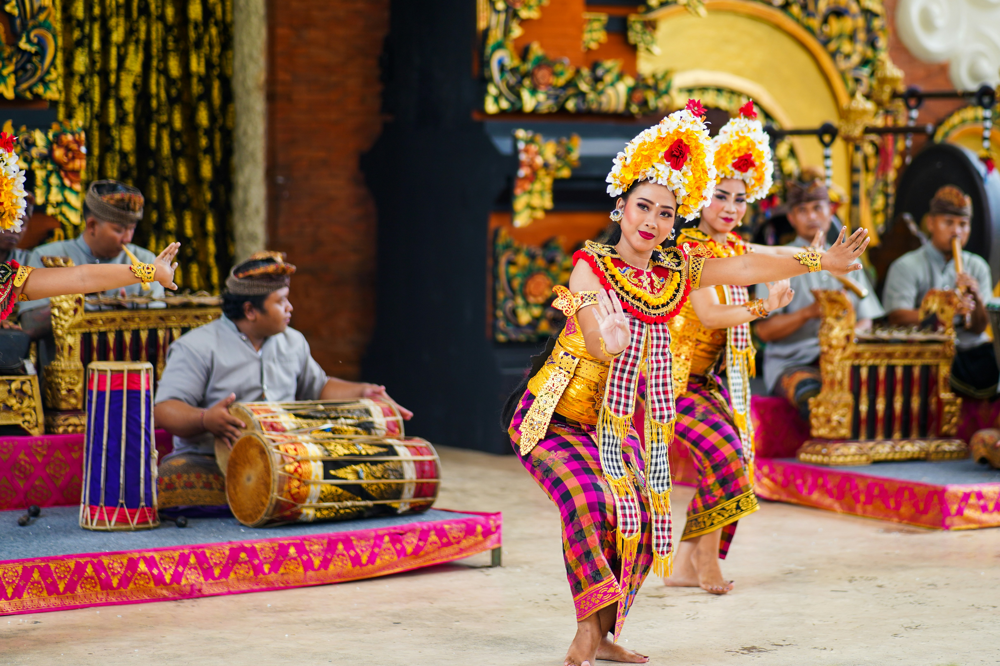
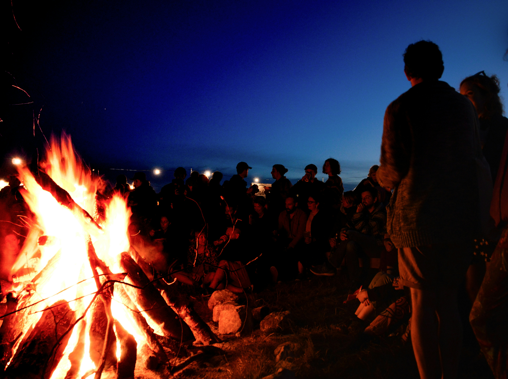

Expresiones Culturales
Una mirada profunda a las costumbres que nos definen.

DanzasDanzas Ancestrales
Movimientos y vestimentas multicolores que narran historias de batallas, cosechas y cosmología.
Leer más Artesanía
Artesanía
Alfarería en Barro
Técnicas milenarias de modelado a mano y cocción tradicional transmitidas de generación en generación.
Leer más
Tradición
Indumentaria Típica
Textiles y vestimentas ceremoniales elaboradas con diseños únicos que identifican a nuestra región.
Leer más
RitualesFiestas del Solsticio
Celebraciones comunitarias nocturnas de agradecimiento a la madre naturaleza por las cosechas.
Leer más